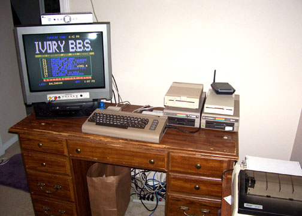

BBS 101
What is a BBS?

The acronym BBS stands for Bulletin Board System which is a computer that is running software which allows people to connect to it and interact with the system and other users. It was basically the main way people would interact with each other electronically on their computers before the internet came into existence/popularity.
We had what are called “modems” which we could plug a telephone line into and it would dial another computer over the phone line, which also had a modem. The modem would send and receive computer signals over the phone lines and then translate the data into a language the computer could understand.
This allowed us to “dial up” someone’s BBS, log into it, and then chat with others, send messages, files, play games, etc. The equivalent today would be something like Facebook, or Reddit, but the vibe of a BBS is WAY different, and WAY more personal.
The modern social media offerings are like going to a huge nightclub where you barely really know anyone and there is so much loud noise, and everything just feels so surface level. A BBS is more like a small housewarming party, where you can mingle with other people, get to know them, share stories, talk about yourself, find out about them, just way more personal of a feeling. So much of the modern social media landscape just feels so fake and disposable whereas on a BBS it feels much more genuine and close.
It’s like listening to your favorite band on a record player vs Spotify. It just feels different.
Why go to one?
There are all sorts of reasons to connect to a BBS. One is out of curiosity to see what it’s like connecting to an old medium, an old way of electronic communication before the internet came into play.
Another reason is if you’re getting sick of what you are finding on social media and want to pull away from it, detach from the algorithm, and find a place where you can have much closer and meaningful connections away from that superficial world that corporations use you as a psychological lab rat to extract as much as they can from you.
The youth of today seem to be becoming more and more disillusioned with it all and are seeking more retro ways of entertainment (books, vinyl records and cassettes, old movies) in an effort to simplify their lives and dopamine addictions. Most have never heard of a BBS. I would be so stoked if one of them (you?) came here by accident and ended up experiencing one for the first time.